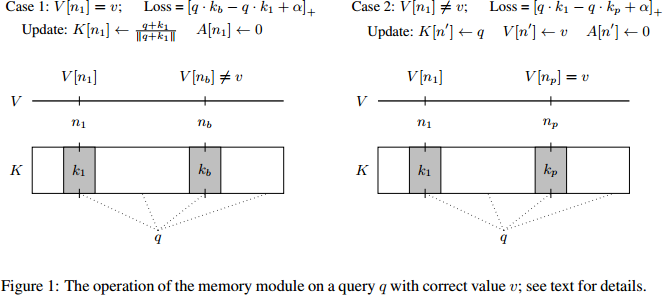
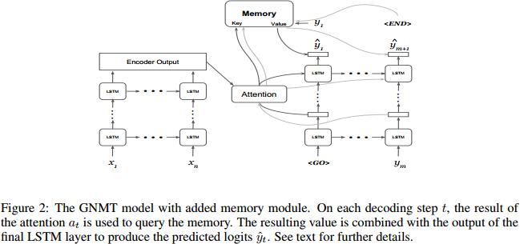
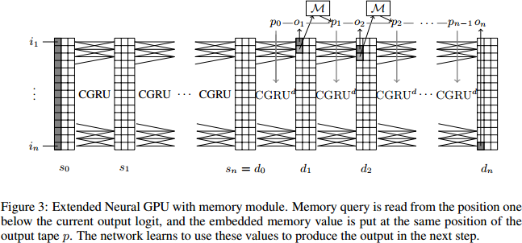
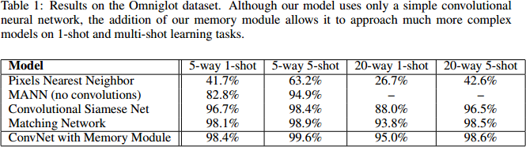
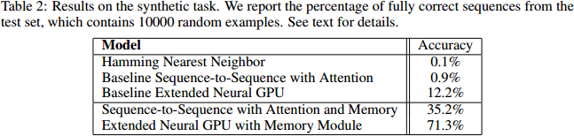
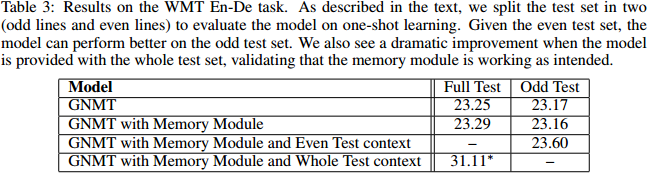

Learning to Remember Rare Events
(ICLR 2017) Learning to Remember Rare Events
Paper: https://openreview.net/pdf?id=SJTQLdqlg
Code: https://github.com/tensorflow/models/tree/master/learning_to_remember_rare_events
提出一个大规模的终身学习的记忆模块使得one-shot learning应用于各种神经网络。
memory-augmented deep neural networks are still limited when it comes to life-long and one-shot learning, especially in remembering rare events.
We present a large-scale life-long memory module for use in deep learning.
The module exploits fast nearest-neighbor algorithms for efficiency and thus scales to large memory sizes.
It operates in a life-long manner, i.e., without the need to reset it during training.
Our memory module can be easily added to any part of a supervised neural network.
the enhanced network gains the ability to remember and do life-long one-shot learning.
Our module remembers training examples shown many thousands of steps in the past and it can successfully generalize from them.
Introduction
general problem with current deep learning models: it is necessary to extend the training data and re-train them to handle such rare or new events.
Motivation: Humans, on the other hand, learn in a life-long fashion, often from single examples.
We present a life-long memory module that enables one-shot learning in a variety of neural networks.
Our memory module consists of key-value pairs. Keys are activations of a chosen layer of a neural network, and values are the ground-truth targets for the given example.
as the network is trained, its memory increases and becomes more useful. Eventually it can give predictions that leverage on knowledge from past data with similar activations.
advantages of having a long-term memory:
One-shot learning
Even real-world tasks where we have large training sets, such as translation, can benefit from long-term memory.
since the memory can be traced back to training examples, it might help explain the decisions that the model is making and thus improve understandability of the model.
evaluate in a few ways, to show that our memory module indeed works:
evaluate on the well-known one-shot learning task Omniglot
devise a synthetic task that requires life-long one-shot learning
train an English-German translation model that has our life-long one-shot learning module.
Memory Module
Our memory consists of a matrix \(K\) of memory keys, a vector \(V\) of memory values, and an additional vector \(A\) that tracks the age of items stored in memory.
\(\mathcal{M} = (K_{memory-size \times key-size}, V_{memory-size}, A_{memory-size})\)
A memory query is a vector of size key-size which we assume to be normalized, i.e., \(\lVert q \rVert = 1\).
Given a query \(q\), we define the nearest neighbor of \(q\) in \(\mathcal{M}\) as any of the keys that maximize the dot product with \(q\):
\(NN(q, \mathcal{M}) = \text{argmax}_i \, q \cdot K[i]\)
Since the keys are normalized, the above notion corresponds to the nearest neighbor with respect
to cosine similarity.
When given a query q, the memory \(\mathcal{M} = (K, V, A)\) will compute \(k\) nearest neighbors (sorted by
decreasing cosine similarity):
\((n_1, \cdots, n_k) = NN_k(q, \mathcal{M})\)
Memory Loss
Assume now that in addition to a query \(q\) we are also given the correct desired (supervised) value \(v\).
In the case of classification, this \(v\) would be the class label.
In a sequence-to-sequence task, \(v\) would be the desired output token of the current time step.
let \(p\) be the smallest index such that \(V[n_p] = v\) and \(b\) the smallest index such that \(V[n_b] \neq v\). We call \(n_p\) the positive neighbor and \(n_b\) the negative neighbor. When no positive neighbor is among the top-k, we pick any vector from memory with value \(v\) instead of \(K[n_p]\).
We define the memory loss as:
\(loss(q, v, \mathcal{M}) = [q \cdot K[n_b] − q \cdot K[n_p] + \alpha]_+\)
Memory Update
If the memory already returns the correct value, i.e., if \(V[n_1] = v\), then we only update the key for \(n_1\) by taking the average of the current key and \(q\) and normalizing it:
\(K[n_1] \leftarrow \frac{q + K[n_1]}{\lVert q + K[n_1] \rVert}\)
When doing this, we also re-set the age: \(A[n_1] \leftarrow 0\).
when \(V[n_1] \neq v\), we find memory items with maximum age, and write to one of those (randomly chosen).
More formally, we pick \(n' = \text{argmax}_i \, A[i] + r_i\) where \(\lVert r_i \rVert << \lVert \mathcal{M} \rVert\) is a random number that introduces some randomness in the choice so as to avoid race conditions in asynchronous multi-replica training. We then set:
\(K[n'] \leftarrow q, V[n'] \leftarrow v, A[n'] \leftarrow 0\)
With every memory update we also increment the age of all non-updated indices by \(1\).

Efficient nearest neighbor computation
The most expensive operation in our memory module is the computation of \(k\) nearest neighbors. This can be done exactly or in an approximate way.
In the exact mode, to calculate the nearest neighbors in \(K\) to a mini-batch of queries \(Q = (q_1, \cdots, q_b)\), we perform a single matrix multiplication: \(Q \times K^T\). This multiplies the \(\text{batch-size} \times \text{key-size}\) matrix \(Q\) by the \(\text{key-size} \times \text{memory-size}\) matrix \(K^T\), and the result is the \(\text{batch-size} \times \text{memory-size}\) matrix of all distances, from which we can choose the top-\(k\). This procedure is linear in \(\text{memory-size}\), so it can be expensive for very large memory sizes. But matrix multiplication is very heavily optimized, so in our experiments on GPUs we find that this operation is not a bottleneck for memory sizes up to half a million.
Using The Memory Module
The memory module presented above can be added to any classification network.
In the simplest case, we use the final layer of a network as query and the output of the module is directly used for classification.
it is possible to embed it again into a dense representation and mix it with other predictions made by the network. To study this setting, we add the memory module to sequence-to-sequence recurrent neural networks.
Convolutional Network with Memory
To test our memory module in a simple setting, we first add it to a basic convolutional network network for image classification.
The output of the final layer is used as query to our memory module and the nearest neighbor returned by the memory is used as the final network prediction.
Sequence-to-sequence with Memory
We add the memory module to the Google Neural Machine Translation (GNMT) model (Wu et al., 2016).
This model consists of an encoder RNN, which creates a representation of the source language sentence, and a decoder RNN that outputs the target language sentence.
We left the encoder RNN unmodified.
In the decoder RNN, we use the vector retrieved by the attention mechanism as query to the memory module.
In the GNMT model, the attention vector is used in all LSTM layers beyond the second one, so the computation of the other layers and the memory can happen in parallel.
Before the final softmax layer, we combine the embedded memory output with the output of the final LSTM layer using an additional linear layer, as depicted in Figure 2.

Extended Neural GPU with Memory
we also add it to the Extended Neural GPU, a convolutional-recurrent model introduced by Kaiser & Bengio (2016).
The Extended Neural GPU is a sequence-to-sequence model too, but its decoder is convolutional and the size of its state changes depending on the size of the input.
Again, we leave the encoder part of the model intact, and extend the decoder part by a memory query.
This time, we use the position one step ahead to query memory, and we put the embedded result to the output tape, as shown in Figure 3.

Related Work
Memory in Neural Networks
One-shot Learning
Experiments
Omniglot
The Omniglot dataset (Lake et al., 2011) consists of 1623 characters from 50 different alphabets, each hand-drawn by 20 different people. The large number of classes (characters) with relatively few data per class (20), makes this an ideal data set for testing one-shot classification.

Synthetic task
To better understand the memory module operation and to test what it can remember, we devise a synthetic task and train the Extended Neural GPU with and without memory.
To create training and test data for our synthetic task, we use symbols from the set \(S = \{2, \cdots, 16000\}\) and first fix a random function \(f : S \to S\).

Translation
To evaluate the memory module in a large-scale setting we use the GNMT model (Wu et al., 2016) extended with our memory module on the WMT14 English-to-German translation task.

Discussion
We presented a long-term memory module that can be used for life-long learning.